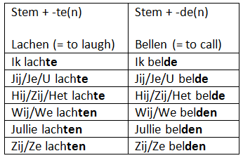
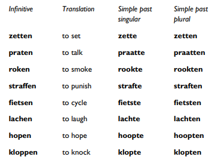
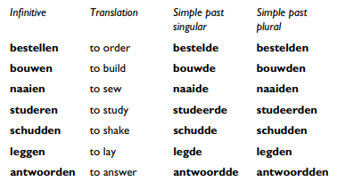
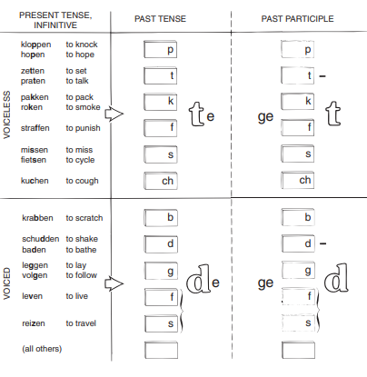
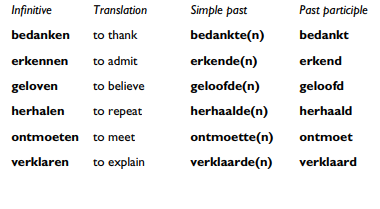

Past tense: "weak" verbs¶
Weak and strong verbs¶
- WEAK: the past tense is formed by the addition of a suffix to the stem
- STRONG: the past tense is formed by a vowel change in the stem itself
| Present | Past | Perfectum | |
|---|---|---|---|
| WEAK | wonen | woonde(n) | (heeft) gewoond |
| STRONG | zingen | zong | (heeft) gezongen |
Simple past of weak verbs¶
Simple past = stem + t/d + e(n)

The TD rule¶
- The endings
-te,-tenare used after voiceless consonants (t,k,f,s,ch,p).
A handy way to remember them is with the word from a name for an old type of sailing vessel:
’t kofschip

Notice that since -tt- is a spelling convention and pronounced like
single t, and -n is dropped in ordinary speech, praten (infinitive),
praatte (simple past, singular), praatten (simple past plural) are all
pronounced alike.
- Verbs that do not have any of the above consonants in their infinitive take a
-de/-denending:

The past participle¶
Past participle = ge + stem + t/d
Ending rule¶
-
The
-tending is used when the final consonant of the stem is any of the consonants in ’t kofschip, provided it is the same consonant in the infinitive. -
The
-dending is used for all other weak verbs
Pronunciation notes¶
-
In pronunciation there is no difference between
-tand-dat the end of the word. -
Since doubled letters may never stand at the end of a word in Dutch, no
-tor-dis added to verbs whose stems already end in-tor-d: - praten -> gepraat hebben
- antwoorden -> geantwoord hebben

No ge- for unstressed starting verbes¶
Dutch has six unstressed verbal prefixes,
* be-: bedanken -> bedankte(n) -> bedankt
* er- (only two verbs): erkennen (admit) -> erkende(n) -> erkend; ervaren (experience)
* ge-: geloven (believe) -> geloofde(n) -> geloofd
* her- (always adds a meaning of “again” to the verb): herbouwen (rebuild) -> herbowde(n) -> herbowd; heralen (repeat) -> hearaalde(n) -> heraald
ont-: ontmoeten (meet) -> ontmoette(n) -> ontmoet (never double consonants at the end)
* ver-: verklaren (declare) -> verklaarde(n) -> verklaard*
The participle prefix
ge-is not added to verbs that already have one of these six prefixes

P106